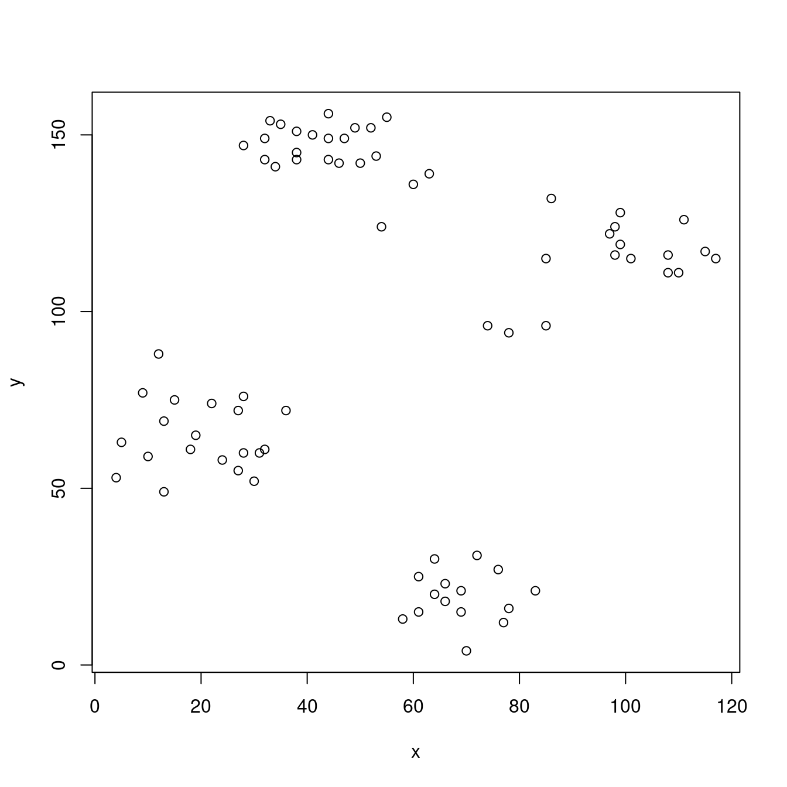
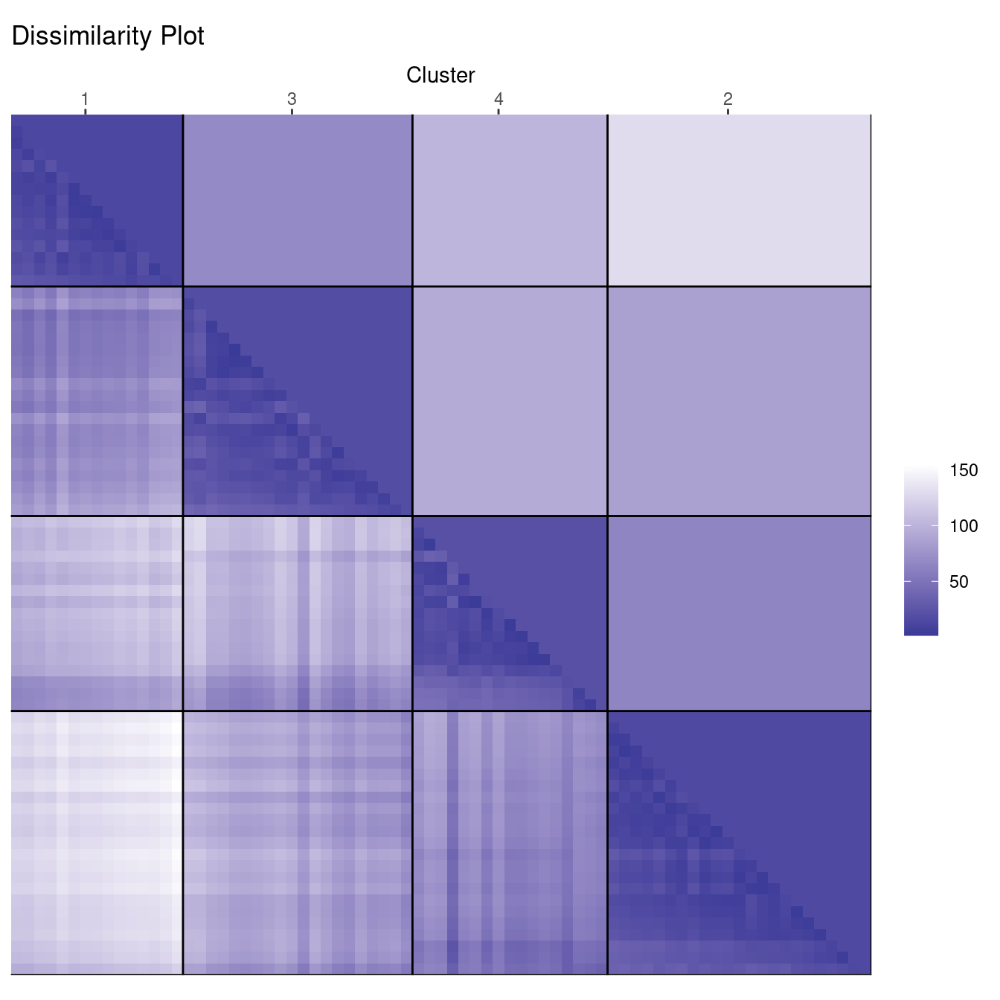
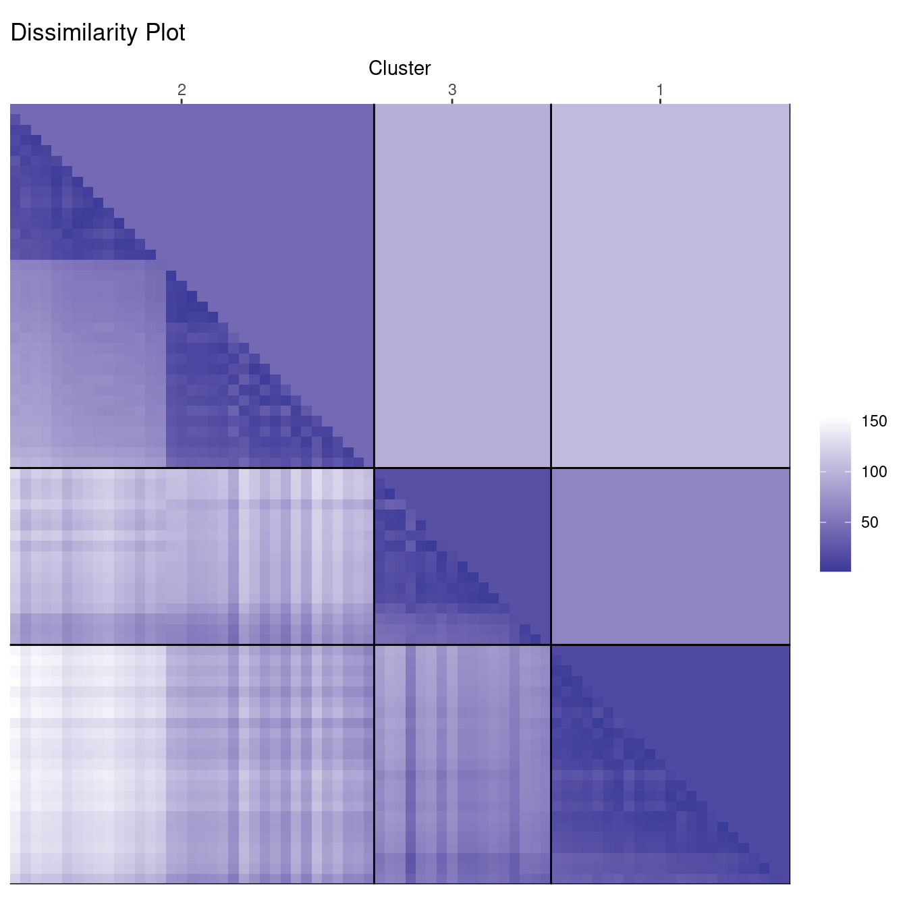
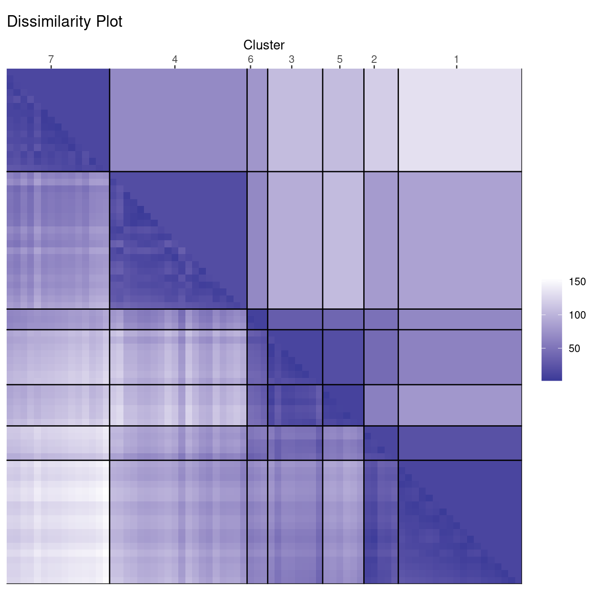
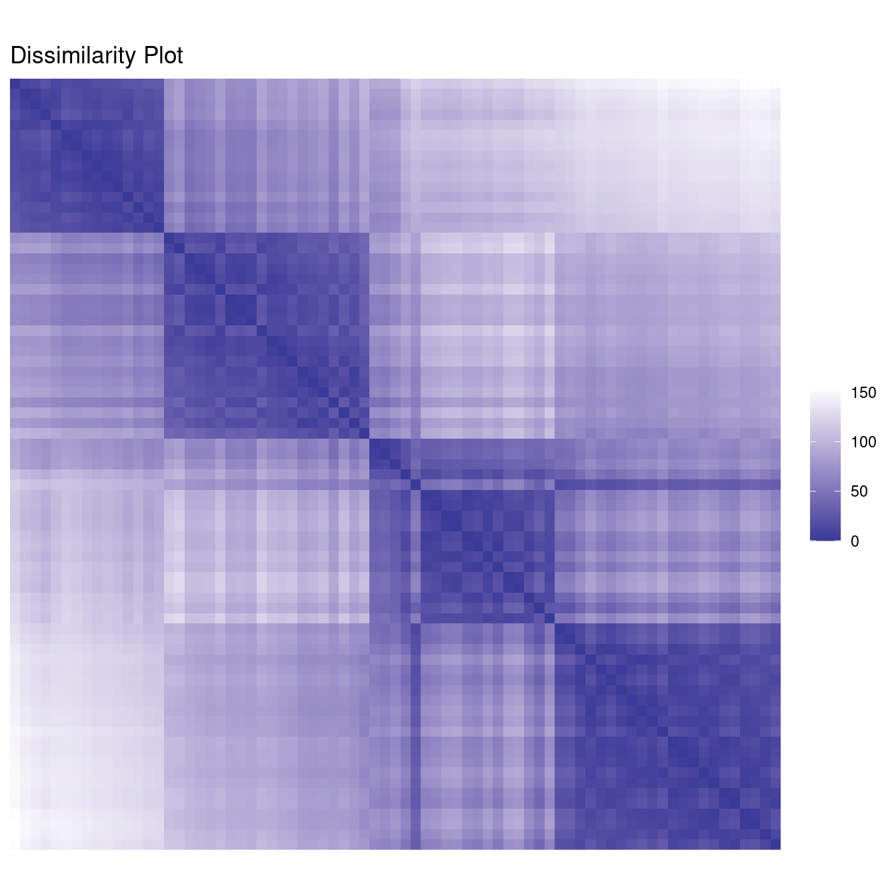
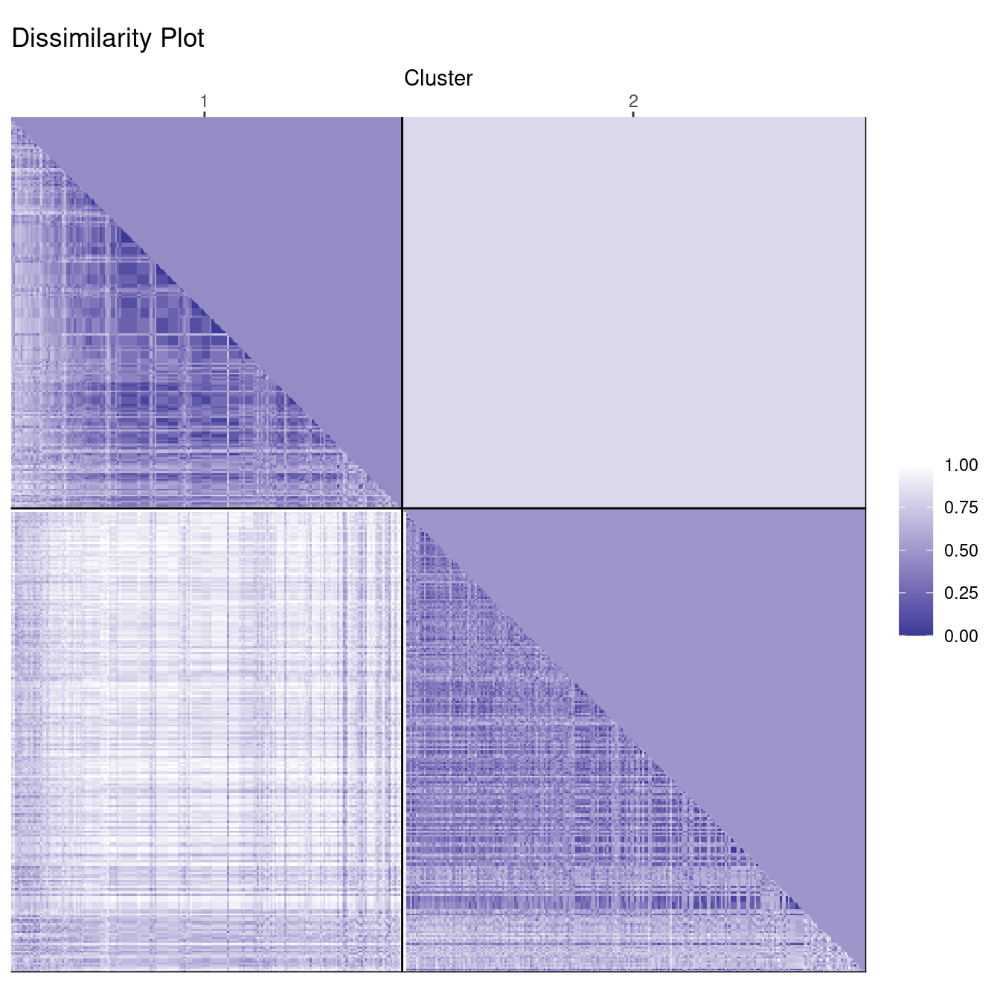
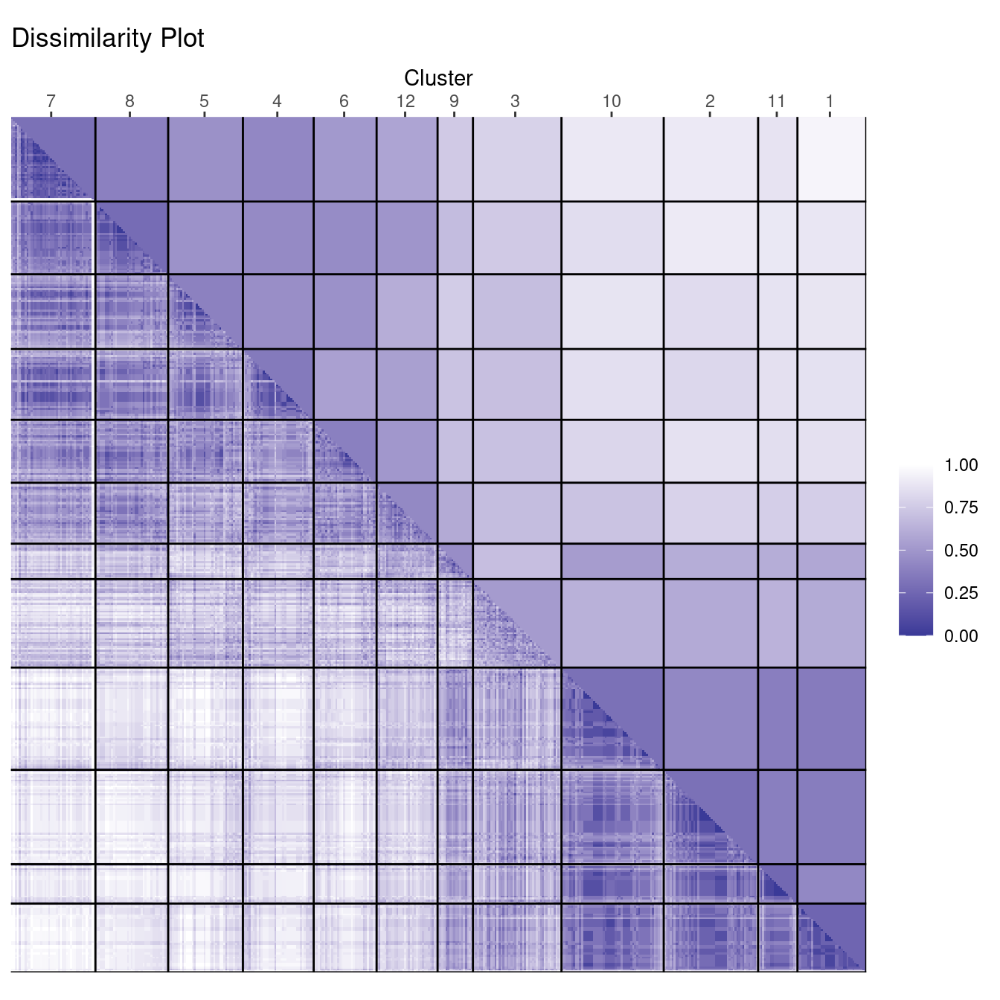

library("seriation")
library("ggplot2")
library("dplyr")
set.seed(1234)How to Evaluate Clusters Using Dissimilarity Plots
Introduction
Dissimilarity plots (Hahsler and Hornik, 2011) can be used to visually inspect the quality of a clustering solution. The plot uses a image plots of the reordered dissimilarity matrix organized by the clusters to display the clustered data. This display allows the user to visually assess clustering quality. Dissimilarity plots are implemented in the R package seriation.
The following examples show how to use dissimilarity plots. The examples are an updated version of the examples in the paper Hahsler and Hornik (2011) using tidyverse, ggplot2, and the latest version of the seriation package.
Examples
We load the used packages and set a seed for the random number generator to make the examples reproducible.
Ruspini: A simple dataset
The Ruspini dataset from package cluster is a popular dataset for illustrating clustering techniques. It consists of 75 points in two-dimensional space with four clearly distinguishable groups and thus is easy to cluster.
The data points (rows) are called objects. We randomize the order of the objects to avoid the order of the data affecting the methods.
library(cluster)
data(ruspini)
ruspini <- ruspini |> sample_frac()
head(ruspini) x y
28 38 143
22 32 149
9 18 61
5 13 49
38 53 144
16 28 60plot(ruspini)
The scatter plot shows that the data points fall into four well defined groups.
We cluster with k-means to find 4 groups and a produce dissimilarity plot. For comparison, we also add a cluster plot (clusplot() from package cluster). For the dissimilarity plot, we first calculate a distance matrix. We use the ggplot2 version of the dissimilarity plot (a non-ggplot version is available using function dissplot() with the same parameters).
cl_ruspini <- kmeans(ruspini, centers = 4, nstart = 5)
d_ruspini <- ruspini |> dist()
ggdissplot(d_ruspini, cl_ruspini$cluster) + ggtitle("Dissimilarity Plot")
clusplot(ruspini, cl_ruspini$cluster, labels = 4)

The cluster plot (to the right) shows that the clusters were easy to find.
Dissimilarity plots visualize the distances between points in a distance matrix. A distance matrix for \(n\) objects is a \(n \times n\) matrix with pairwise distances as values. The diagonal contains the distances between each object and itself and therefore is always zero. In this visualization, low distance values are shown using a darker color. The result of a “good” clustering should be a matrix with low dissimilarity values forming blocks around the main diagonal corresponding to the clusters.
The dissimilarity plot shows a good clustering structure with the clusters forming four dark squares. The lower triangle shows the pairwise distances and the upper triangle shows cluster averages. The clusters are ordered by similarity indicating that cluster 1 and 3 are similar and clusters 1 and 2 are the most dissimilar.
Deciding on the number of clusters is a difficult problem. Next, we look at what happens when we misspecify the number of clusters. First, we use too few clusters with \(k = 3\).
cl_ruspini3 <- kmeans(ruspini, center=3, nstart = 5)
ggdissplot(d_ruspini, cl_ruspini3$cluster) + ggtitle("Dissimilarity Plot")
clusplot(ruspini, cl_ruspini3$cluster, labels = 4)

In the cluster plot to the right, we see that the cluster plot merges two clusters together.
The dissimilarity plot shows that cluster 2 actually consists of two clusters. This can be seen by the two triangles separated by a lighter square inside the cluster.
Next, we use too many clusters with \(k=7\).
cl_ruspini7 <- kmeans(ruspini, centers=7)
ggdissplot(d_ruspini, cl_ruspini7$cluster) + ggtitle("Dissimilarity Plot")
clusplot(ruspini, cl_ruspini7$cluster)

The cluster plot to the right shows that 7 may be a reasonable number to identify smaller groups. However, the dissimilarity plot also rearranges the clusters and still clearly shows that there are actually four well-defined clusters in the data. Dissimilarity plots make detecting a misspecification of \(k\) a lot easier.
We can also use dissimilarity plots for exploring data without clustering.
ggdissplot(d_ruspini) + ggtitle("Dissimilarity Plot")
Votes: High dimensional data
The Congressional Voting Records data set is available via the UCI Repository of Machine Learning Databases. This data set includes votes (voted for, voted against, not voted) for each of the 435 congressmen of the U.S. House of Representatives on the 16 key votes during the second session of 1984.
To preserve the information that some congressmen, possibly on purpose, did not vote on some topics, we encoded the 16 votes using 32 binary variables, two for each key vote. A 1 for the first variable codes for a vote in favor, a 1 for the second variable codes for a vote against, and a 0 for both indicates that the congressman did not vote on the topic. Then we used the Jaccard index (called “binary” in dist()) to calculate a dissimilarity matrix between congressmen.
library(cluster)
data(Votes, package = "cba")
x <- cba::as.dummy(Votes[-17])
d_votes <- dist(x, method = "binary")Since our distances are not Euclidean now, we use PAM for clustering. PAM is similar to k-means, but accepts as input a distance matrix. We cluster with \(k=2\), since we suspect two main political groups in the data.
labels_votes2 <- pam(d_votes, k=2, cluster.only = TRUE)
ggdissplot(d_votes, labels_votes2) + ggtitle("Dissimilarity Plot")
clusplot(d_votes, diss = TRUE, labels_votes2, labels = 4)

This clearly gives a good clustering result. The dissimilarity plot shows that the two groups are slightly different in size (number of representatives) and that the members of the smaller group vote slightly more similar with each other (a slightly darker color). We also see that the clusters are not completely clear inside with lighter streaks on one side.
Maybe there are several sub-groups in each political party. We cluster again with \(k = 12\).
labels_votes12 <- pam(d_votes, k=12, cluster.only = TRUE)
ggdissplot(d_votes, labels_votes12) + ggtitle("Dissimilarity Plot")
clusplot(d_votes, diss = TRUE, labels_votes12, labels = 4)

The cluster plot gets too complicated, but the dissimilarity plot shows that one group has a very compact core (a dark square) with a few more clusters more loosely connected. The other group is slightly larger, but consists of many more diverse clusters. There are two clusters (9 and 3) with similarity to both groups. Analyzing the party affiliation shows that the more compact group consists of representatives of the republican party, while the more diverse group contains democrats.
Conclusion
Dissimilarity plots scale well with the dimensionality of the data and by reordering clusters and objects within clusters can provide a very concise structural representation of the clustering. Dissimilarity plots are also helpful in spotting the mis-specification of the number of clusters used for partitioning.
Dissimilarity plots are implemented in the package seriation and are easy to use. Details on the method can be found in Hahsler and Hornik (2011).
References
- Hahsler, M. and Hornik, K. (2011): Dissimilarity plots: A visual exploration tool for partitional clustering. Journal of Computational and Graphical Statistics, 10(2):335–354. doi:10.1198/jcgs.2010.09139 (read the preprint)